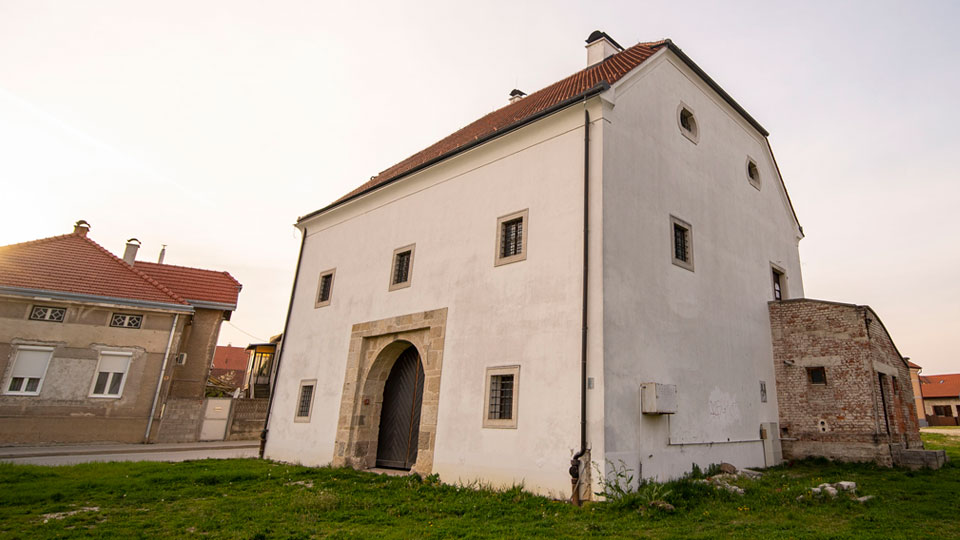

Povijest grada
13. Stoljeće
Koprivnica je dobila ime po rječici Koprivnici koja se spominje u listinama hrvatsko-ugarskog kralja Andrije II. Arpadovića iz 1207., 1209. i 1217. godine. Naselje se prvi puta spominje 1272. godine u darovnici desetogodišnjega kraljevića Ladislava IV. Kumanca kaštelanu i vitezu koprivničke utvrde Bakaleru. Godine 1292. u Koprivnicu dolaze franjevci na poziv bana Henrika Gisingovca i podižu samostan i župnu crkvu Blažene Djevice Marije.
14. Stoljeće
Bilo je to zlatno stoljeće u razvoju grada. Koprivnica se tada afirmirala kao urbano središte srednje Podravine, ali i kao značajan i ugledan grad u anžuvinskoj Slavoniji. To se u prvom redu odnosi na društveno uređenje grada, gospodarsku snagu i prometnu ulogu na znamenitoj cesti kralja Kolomana što potvrđuje dvadesetak sačuvanih srednjovjekovnih povelja nastalih tijekom stoljeća. Najvažnija među njima je povelja kralja Ludovika I. Anžuvinca od 4. studenog 1356. godine kojom Koprivnica, na temelju pravnih povlastica pisanih po uzoru na zagrebački Gradec, postaje slobodni i kraljevski grad.
15. Stoljeće
Tijekom 15. stoljeća gospodari Koprivnice bili su kralj Zigmund Luksemburgovac, zagrebački biskup Ivan Alben, grofovi Celjski, kralj Matija Korvin i banovi Ernušt. Važniju ulogu u životu koprivničkog kraja imala je sve do velikaških sukoba 1446. godine utvrda Kamengrad na sjevernim obroncima Bilogore.
16. Stoljeće
Na dvoru Ernušta 23. rujna 1526. godine, nepunih mjesec dana nakon bitke hrvatsko-ugarske vojske i Osmanlija na Mohačkom polju, održan je Sabor Kraljevine Slavonije na kojem je ban Krsto Frankopan Brinjski izabran za “skrbnika i branitelja” kraljevstva. Od polovice 16. stoljeća Koprivnica je utvrđena kapetanija koja ulazi u sustav utvrda Slavonske vojne krajine sa sjedištem generalata u Varaždinu. U skladu s najmodernijim vojnim rješenjima protutopovske obrane koprivničku tvrđavu moderniziraju sjevernotalijanski i nizozemski arhitekti.
17. Stoljeće
Do šezdesetih godina 17. stoljeća koprivnička je renesansna zemljana protuturska fortifikacija – zvijezda postala najmodernija tvrđava između Drave i Save koja je štitila “ostatke ostataka hrvatskoga kraljevstva”. Od tridesetih godina 17. stoljeća počinje gospodarska i demografska obnova. Na kraju stoljeća u gradu djeluju tri obrtnička ceha – mješoviti ceh kovača, bravara, mačara, remenara, sedlara i zlatara te cehovi čizmara i mesara koji svojim proizvodima snabdijevaju vojnu posadu koprivničke tvrđave i civilno stanovništvo grada i okolice. 
18. Stoljeće
Tijekom stoljeća dolazi do barokne obnove grada. Unutar tvrđave podižu se zidani objekti, a do nove izgradnje dolazi i u podgradu na sjevernom i sjeverozapadnom rubu tvrđave.Odlukom habsburške carice Marije Terezije 1765. godine sjedište generalata seli iz Koprivnice u Bjelovar čime je grad ujedno izdvojen iz područja Slavonske krajine.
19. Stoljeće
Novi gospodarski razvoj grada počinje 1870. godine kada je u sklopu Austro-ugarske prometne politike puštena u promet željeznička pruga Budimpešta – Zakany – Koprivnica – Zagreb koja je uskoro izgrađena i do Rijeke. U društvenom i javnom životu – kazalištu, književnosti, političkim strankama, gradskim novinama – ostvaruju se ideje angažiranog dijela koprivničkog građanstva.
20. Stoljeće
U vrijeme gradonačelnika Josipa
Vargovića između
1906. i 1913. počinje proces
industrijalizacije u
Koprivnici izgradnjom tvornice za kemijske
proizvode
Danica d.d. čije je poslovanje
obilježilo i snažno
utjecalo na dinamiku i strukturu koprivničkog
gospodarstva sve do tridesetih godina 20.
stoljeća.
Tijekom druge polovice stoljeća ovu ulogu u
rastu i
razvoju grada Koprivnice i Podravine preuzela je
Podravka, industrija za
preradu voća i povrća, danas
prehrambena industrija svjetske
orijentacije
Podravka d.d.
Nakon dva svjetska rata i više državnih uređenja
i
režima u okviru kojih je Hrvatska tijekom 20.
stoljeća tražila svoje mjesto među demokratskim
državama Europe, na referendumu građana 1991.
godine
od 93 % birača koprivničke
općine, 96 % se izjasnilo
za prijedlog Hrvatske kao suverene
države koju
odluku su brojni Koprivničanci i Podravci i
obranili
sudjelujući u raznim postrojbama u
Domovinskom ratu
od 1991. do 1995. godine.
Restorani
| Gastro Ponuda Restorana | |||
|---|---|---|---|
| Jelo | Cijena | Opis | |
| Predjela | Toplo hladna salata | 10€ | Toplo hladna salata s ramstekom 150 g - juneći ramstek, salata zelena, povrće sa žara, krastavci svježi, cherry rajčica |
| Cezar salata | 8€ | piletina, hrskava panceta, krutoni, inćuni, cherry rajčice, listići grana padano sira, cezar umak | |
| Glavna jela | Kuhani dimljeni buncek | 10€ | Kuhani dimljeni buncek restani grah, dinstano kiselo zelje, hren |
| Medaljoni od teletine | 18€ | Medaljoni od teletine umak od pršuta i kadulje, domaći kroketi | |
| Rib-eye odrezak | 40€ | Rib-eye odrezak dry-aged 90 dana 300g | |
| Deserti | Čokoladni souffle | 5€ | Čokoladni souffle lava cake, sladoled vanilija, bučino ulje |
| Palačinke s namazom | 3,5€ | Palačinke s namazom (Lino Lada po izboru, čokolada, pekmez ili džem) | |
| Posebne ponude | Dnevni meni | 20€ | Kompletan obrok s juhom, glavnim jelom i desertom po izboru šefa kuhinje |
Zabava
Fašnik 2024
Vraćanjem Gradskog ključa zamjenici gradonačelnika Kseniji Ostriž, završena je vladavina „poštene obitelji“ u Koprivnici. U organizaciji Turističke zajednice grada Koprivnice, mnogobrojnim posjetiteljima na središnjem Zrinskom trgu predstavilo se 11 dječjih i 5 odraslih skupina s oko 500 maskiranih sudionika, koje su sudjelovale u šarenoj fašenskoj povorci. Na kraju veselog programa, po kratkom postupku, osuđen je Fašnik, dežurni krivac za sve loše stvari koje su se dogodile tijekom protekle godine. Kazna – spaljivanje u gradskom parku pred svjedocima.
Datum događaja: 10. Veljače 2024.
Renesansi festival
Najbolja manifestacija Hrvatske, Renesansni festival sljubljivanje je kasno srednjovjekovnih povijesnih fakata i originalnosti Koprivnice, Podravine i Hrvatske s baštinskim vrijednostima zapadnoeuropskog kulturnog civilizacijskog kruga (čiji je dio i Hrvatska), koje se manifestiraju kroz brojne nastupajuće viteške, obrtničke i muzičke skupine iz gotovo deset europskih zemalja. Manifestacije je pravi primjer razvijanja europskog identiteta Grada i Regije. Koprivnički bedemi, ostaci nekadašnje velebne, renesansne protuturske utvrde, nijemi su i mistični svjedok davno minulog vremena. Kriju li oni neku zanimljivu tajnu, priču o nesretnoj ljubavi ili hrabrosti svojih branitelja, mogu li nam pokazati kako su stvarali, ratovali, slavili ili trgovali žitelji stare Koprivnice, predočit će Vam Renesansni festival. Ova turističko- povijesna i edukativna manifestacija je najveći spektakl „živih slika“ iz prošlosti u ovom dijelu Europe, a svoje uporište ima u povijesnim faktima. Većina sadržaja bit će vezana uz 15. st., a naročito uz 16. st. kada su i nastale renesanse fortifikacije.
Datum događaja: 22. - 25. Kolovoz
Srednjovjekovni Božićni sajam
sajam starih zanata i obrtnika, putujući trgovci, srednjovjekovno slikarstvo, srednjovjekovne jaslice, streličarstvo za djecu, izložba srednjovjekovnih glazbala, kaligrafija, srednjovjekovna tiskara, lakrdijaši, srednjovjekovna kupelj i domaće životinje na jedinstvenom adventskom sajmu u Hrvatskoj. U velikom dvorištu Muzeja ugostiteljsku ponudu činit će jela spravljena po srednjovjekovnim recepturama, kuhano vino, krampampule, pečeni kostanji i još mnogo toga. Uz to, moći ćete besplatno razgledati koprivnički muzej i novopostavljenu interaktivnu izložbu “Samo je vu goricaj živlenja pravi raj” posvećenu tradicijskom vinogradarstvu i pučkoj pobožnosti realiziranu kroz EU projekt reVITAlize
Datum događaja: 03. - 23. Prosinac